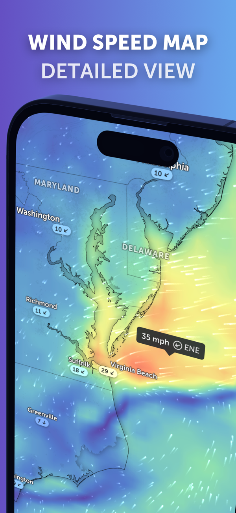
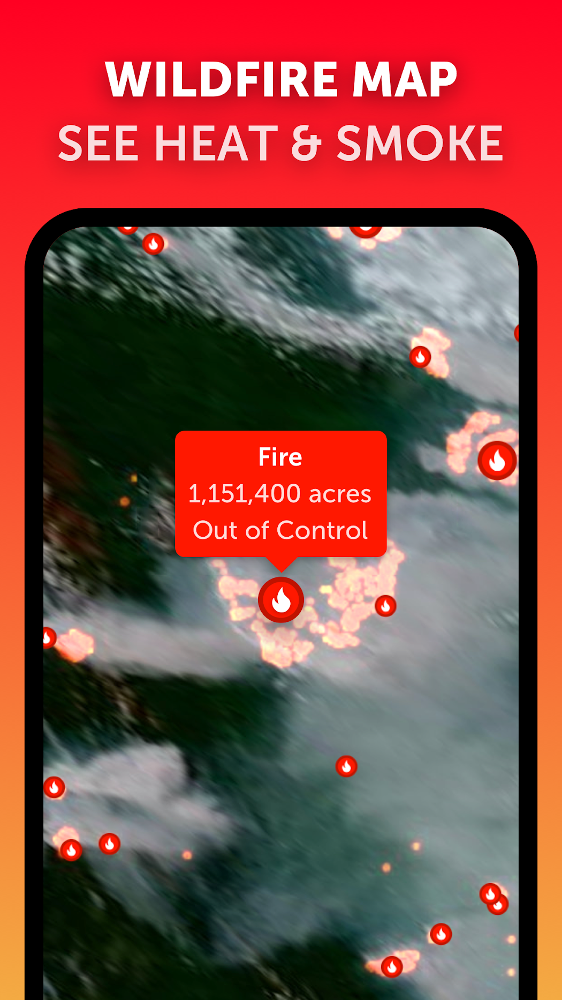

ZoomEarth 零基础上手：四步学会用它看风、体感温度和野火
从下载安装到叠加三层关键图层，跟着教程一步步搞定，出门前看一眼比查三个天气 App 还省心。
读完这篇教程，你能独立用 ZoomEarth 完成三件事：看明天吹什么风、判断出门穿多少、如果附近有野火能知道烟会不会飘过来。整个过程不超过十分钟，操作全是鼠标点几下的事。
准备工作
ZoomEarth 是一个跨平台的桌面应用，它的官网上 Windows、macOS、Linux 安装包和网页版都能找到。安装包从官方下载拿就行，几十兆的体积，装好点开就能用，不需要登录也能看大部分图层。
如果你之前只看过天气预报 App，那 ZoomEarth 的地图视角可能需要适应一下——它不是给你报城市天气，而是把全球的气象数据铺在一张地球上，你想放大哪就放大哪，想看哪个时间点就拖时间轴。
第一步：打开风速图层，认识风的骨架
启动 ZoomEarth，左边的图层面板里找「风速」，勾选一下，地球表面立刻就有了颜色和流动线条。

这层东西记住两个读法就够了：
- 颜色是风速大小，冷色微风、暖色大风，图例在界面右下角，不确定时对照一下。
- 流动线条的走向是风的去向，线条越长越密表示风速越强。
把地图缩放一下，先看你所在的位置，风从哪个方向吹过来、大概多大，心里就有数了。想知道具体数值？在地图上点一下那个位置，弹窗里会出现风速的具体数字，嫌单位不顺眼可以在设置里换成公里每小时或英里每小时。
第二步：叠加体感温度，别光看气温
风速层打开之后，再勾上「体感温度」图层。这时候地球上同时显示两层信息，体感温度会告诉你同样的气温、在当前的风和湿度条件下，人体实际感觉是冷还是热。
举个最常见的例子：气温显示 30 度，体感可能 38 度也可能 28 度——差别就出在湿度和风速上。南方梅雨天湿度大，汗液蒸发不出去，体感会比气温高一大截；冬天刮大风的时候，零上五度体感可能只有零下。
出门前把这两层叠着看一遍，比只看气温数字靠谱得多。夏天体感高一个档，户外活动就得降强度；冬天风寒效应明显，多穿一层比看气温数字靠谱。想深入了解这两层的算法差异和更多图层组合，可以翻一下zoomearth文档。
第三步：如果有野火，追一下烟往哪飘
ZoomEarth 有一整套野火监测图层，包括活跃火情和热点。先勾上活跃火情层——这层收录的是官方确认的火灾记录，不是卫星自动探测的疑似信号，每条火点都有机构来源和详情字段。
找到你附近的火点之后，切到卫星影像层，推荐用 GeoColor 风格，因为它接近人眼的彩色观感，烟在绿色山林背景下是灰白色，对比特别明显。

然后把时间轴拖到火灾发生的时间点，逐帧看烟区边缘的移动方向——烟羽往哪个方向飘，高空风就是往那个方向吹的。把烟羽下游的城镇在地图上标出来，就能粗略判断「谁在下风向」。
常见卡点
平均风和阵风别搞混：风速图层显示的是地面平均风，海边突然掀翻遮阳伞那种阵风不在里面。平均风四级的天气，阵风完全可能上七级，真要出海或放风筝，记得把两层一起看。
体感温度的数值差是正常的：体感是折算出来的指标，不同算法给的数字有差异，这是正常的。看趋势和相对差就行，不用纠结具体数字和你手机 App 里的体感为什么不一样。
刚起火看不到别慌：活跃火情层收录的是官方发布后的记录，刚起火还没进入机构流程的时候，这层暂时不会显示。这时候可以切到热点层看看，那层是卫星自动探测的疑似热信号，时效更快但可能有误报。
进阶一句
熟练了之后可以试试叠加台风追踪图层，台风眼周围一圈旋转的风在风速层上特别直观，比看新闻里的台风路径图多了一个「风场结构」的维度。
ZoomEarth 能玩的远不止这几个图层——云图、降水、气压、地震都有，但日常够用的就是风速、体感温度和野火监测这三个。每天出门前花两分钟扫一眼，比翻三个天气 App 还省心。
这套资料在三个仓库都能拿到，方便不同网络环境下查阅和备份：GitHub 主仓库是最早维护的版本，Gitee 和 GitCode 都同步了同样的内容，国内用户访问起来更顺畅。